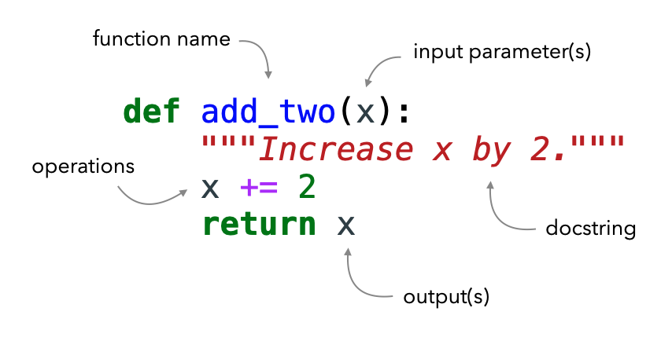
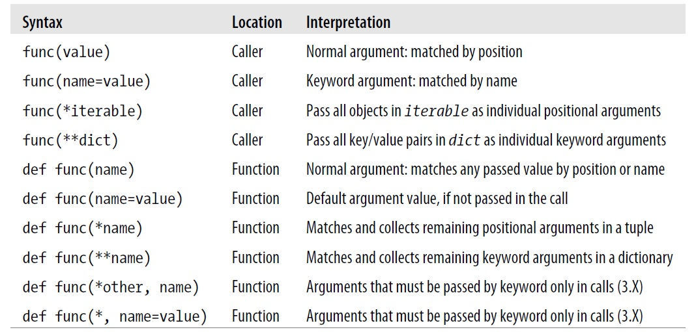

# Create an empty file
myfile = open('test.txt','w')Lecture 3 - Files, Functions


3.1 Files
Python uses file objects to interact with external files on your computer. These file objects can be any sort of file you have on your computer, such as a text file, Excel document, email, audio file, picture, etc.
Python has a built-in open() function that allows us to open and write to files.
The open() function requires to pass two arguments: filename and processing mode. The filename is simply the name of the file, and for reading it, it is assumed that the file exists in the current working directory: if that is not the case, the filename should also include the path to the file. The processing mode can be either the string 'r' to read the file, 'w' to write to the file (create a file and open it for writing), or 'a' to append text to an existing file. Also, adding + to the mode allows to both read and write to a file (e.g., 'r+', 'a+'). Both the filename and processing mode should be strings.
afile = open(filename, mode)The open function creates a Python file object named afile in this example (we can select any valid name for it), which serves as a link to the file residing on the computer named filename. The file object allows to transfer strings of data to and from the linked file filename.
3.1.1 Writing to a File
For example, let’s create a simple text file called test.txt having two lines of text. The open function in the example below will return a file object named myfile, which has a write() method for data transfer.
The file test.txt will be saved in the current working directory.
The .write(string) method of the file object named myfile allows to write a string to the file. In the next example, the string 'hello text file\n' is written. Note also that we need to include the end-of-line terminator \n in the string, otherwise the next write command will continue the current line.
# Write a line of text: string
myfile.write('hello text file\n')
# Note that the write call returns the number of characters in the string16myfile.write('goodbye text file\n')18myfile.close()Now, click on the test.txt file in the Jupyter Lab dashboard, to inspect if it looks as we expect.
Use caution when opening an existing file for writing with w, as it truncates the original file, meaning that any existing content in the original file is deleted. Let’s try the following code.
myfile = open('test.txt','w')
myfile.write('This is a first line\n')
myfile.write('This is a second line\n')
myfile.close()Now open the file test.txt and you will notice that it has been overwritten.
3.1.2 Opening a file
Let’s open the file test.txt.
# Open for text input: 'r' is default mode and it can be omitted
myfile = open('test.txt','r')# Read the lines one at a time
myfile.readline()'This is a first line\n'# Read the lines one at a time
myfile.readline()'This is a second line\n'# Empty string: end-of-file (EOF)
myfile.readline() ''In addition, using the read method we can read the entire file into a string all at once.
myfile = open('test.txt')
myfile.read()'This is a first line\nThis is a second line\n'Or, if we use print the content will be displayed in a readable format without showing the \ncharacters.
myfile = open('test.txt')
print(myfile.read())This is a first line
This is a second line
Also note that we can write the above cell into one single line:
print(open('test.txt').read())This is a first line
This is a second line
One confusing thing about reading files is that if we try to read the same file object twice, we’ll find out that it only gets read once.
myfile = open('test.txt')
myfile.read()'This is a first line\nThis is a second line\n'# What happens if we try to read the file again?
myfile.read()''This happens because file objects remember their position, and after we read the file the first time, the reading ‘cursor’ was at the end of the file, and there was nothing left to read.
We can reset the ‘cursor’ like this:
# Seek to the start of file (index 0)
myfile.seek(0)0# Now read again
myfile.read()'This is a first line\nThis is a second line\n'When we have finished using the file, it is always good practice to close it.
myfile.close()You can also sometimes see another code variant, where open is used within a with statement, like in the example shown below. An advantage of this approach is that the with statement automatically closes the file after the block, as well as it makes handling any unexpected errors easier. Thus, it is the preferred way for opening files by many Python users. The with statement in Python is also referred to as a context statement, or context manager, as it allow to manage resources efficiently and cleanly.
with open('test.txt', 'r') as myfile:
data = myfile.read()
print(data)This is a first line
This is a second line
Alternatively, to read files from other directories on your computer (instead of the current working directory), enter the entire file path.
For Windows, one option is to use double backslashes \\, so that Python doesn’t treat the second \ as part of an escape character (such as \n, \t, etc.):
myfile = open('C:\\Users\\YourUserName\\Desktop\\MyFolder\\test.txt')For example, note that the \n escape character in the following cell introduces an unwanted new line.
print('C:\some\name')C:\some
ameThis is corrected by using double backslashes.
print('C:\\some\\name')C:\some\nameFor Mac OS and Linux, use forward slashes.
myfile = open('/Users/YourUserName/MyFolder/test.txt') In latest Python versions open works with either forward slashes or backward slashes, so either is fine. However, the problem with the single and double slashes in the examples above is that codes written on a Windows machine will not work on Unix machines, and vice versa. Therefore, a preferred option for Windows would be to use a raw string and single backslashes as shown below.
myfile = open(r'C:\Users\YourUserName\Desktop\MyFolder\test.txt')The raw string form (use of r before the string) turns off escape characters in strings.
Note that C:\Users\YourUserName\Desktop\MyFolder\test.txt is an absolute path because it lists all directories on the disk C: to access the file test.txt. The path can also be a relative path, where for example if we are currently in a current working directory C:\Users\YourUserName\Desktop we can use MyFolder\test.txt as a path for the filename relative to the current working directory.
3.1.3 Appending to a File
Passing the argument 'a' as a processing mode opens the file and puts the pointer at the end for appending. Similarly, 'a+' allows us to both read and write to a file. If the file does not exist, one will be created.
myfile = open('test.txt','a+')
myfile.write('\nThis is text being appended to test.txt\n')
myfile.write('And another line here\n')22myfile.seek(0)
print(myfile.read())This is a first line
This is a second line
This is text being appended to test.txt
And another line here
myfile.close()3.1.4 Iterating through a File
When reading a file line by line, the entire file is held in the memory. Using file iterators, such as a for loop, is often preferred with large files. The created file object by open will automatically read and return one line on each loop iteration.
for line in open('test.txt'):
print(line)This is a first line
This is a second line
This is text being appended to test.txt
And another line here
3.1.5 Reading and Writing Binary Files
In the above sections, we used the open() function in text mode, which allows to read and write strings from and to files. The open() function can also be used in binary mode that allows to read and write binary files. This mode is useful for working with non-textual files in Python, such as images, audio files, compressed files, etc. For reading and writing binary files, the processing mode in the open() function should be set to 'rb' to read the file, and 'wb' to write to the file, where the added letter b indicates that the function is applied to processing binary files.
When reading a file in binary mode, Python will read every byte in the file as is, and return a byte string. Conversely, in text mode, Python will decode the information in the file into text characters, and return a text string.
image_file = open('images/house.png', 'rb')
image_content = image_file.read()
image_file.close()type(image_content)bytesNote however that there are other Python packages that provide advanced functionalities for working with non-textual files, in comparison to the open() function. For instance, for working with image files, the Python libraries OpenCV, Pillow, ImageIO are almost always preferred by the users.
3.1.6 Storing Python Objects in Files: Conversions
Let’s next consider an example where multiple Python objects are written into a text file on multiple lines. The objects need to be first converted to strings, as the write method does not do any automatic to-string formatting.
# Introduce numbers, string, dictionary, and list objects
S = 'Spam'
X, Y, Z = 43, 44, 45
D = {'a': 1, 'b': 2}
L = [1, 2, 3]
# Create output text file
F = open('datafile.txt', 'w')
# The lines in the string variable S above should end with \n
F.write(S + '\n')
# Convert numbers to strings
F.write('%s,%s,%s\n' % (X, Y, Z))
# Convert to strings and separate wtih \n
F.write(str(L) + '\n' + str(D) + '\n')
F.close()Next, let’s open the file and read it.
Notice in the next two cells that the displayed output gives the raw string content, while the print operation interprets the embedded end-of-line characters to render a formatted display.
content = open('datafile.txt').read()
# String display
content"Spam\n43,44,45\n[1, 2, 3]\n{'a': 1, 'b': 2}\n"# User-friendly display
print(content) Spam
43,44,45
[1, 2, 3]
{'a': 1, 'b': 2}
To convert the strings in the text file into Python objects, we will need to use conversion tools.
For instance, rstrip() removes the end-of-line character \n.
# Open the file again, this time using the object named F
F = open('datafile.txt')
# Read the first line (see above)
line = F.readline()
line'Spam\n'# Remove end-of-line
s = line.rstrip()
s'Spam'The next line contains the string of numbers '43,44,45\n', for which split() can be used to separate the numbers.
# Next line from file
line = F.readline()
line'43,44,45\n'# Split on commas
parts = line.split(',')
parts['43', '44', '45\n']# int() converts to integer numbers
numbers = [int(P) for P in parts]
numbers[43, 44, 45]x, y, z = numbers
x, y, z(43, 44, 45)To covert the list and dictionary we will use eval() which treats a string as executable code containing a Python expression.
line = F.readline()
line'[1, 2, 3]\n'line.rstrip()'[1, 2, 3]'l = eval(line)
l[1, 2, 3]type(l)listline = F.readline()
line"{'a': 1, 'b': 2}\n"d = eval(line)
d{'a': 1, 'b': 2}type(d)dictThe above process of converting strings to Python objects is time-consuming and tedious, even for this simple example. Fortunately, there are simpler ways to write and read files in Python, which do not require the above conversion steps. Next, we will learn about the Python built-in modules pickle and JSON for storing Python objects, and in another lecture we will learn about the library pandas for reading and writing to files.
3.1.7 Storing Python Objects with pickle
Python’s module pickle allows storing almost any Python object in a file directly, without the requirement for conversions to and from strings. To store the above list L in a file, we can pickle it directly by using the method pickle.dump().
import pickle
F = open('newdatafile.pkl', 'wb') # 'wb' used for writing to a binary file, the pickle module uses binary format for storing objects
# Pickle any object to file
pickle.dump(L, F)
F.close()Then, to read the file and get the list, we simply use pickle again (a.k.a. unpickling) via the method pickle.load().
# Load any object from file
F = open('newdatafile.pkl', 'rb') # similarly, 'rb' used for reading a binary file
list1 = pickle.load(F)
F.close()
list1[1, 2, 3]The pickle module performs a conversion of Python objects to byte stream representation. In general, the process of converting a Python object into a format that can be stored or transmitted is referred to as object serialization. The format can be a byte stream (as with the pickle module) or a string representation (as with JSON module, covered next). The reverse process, called deserialization, reconstructs the original Python object from the converted format.
3.1.8 Storing Python Objects with JSON
JSON (stands for JavaScript Object Notation) is a newer data interchange format, which originated from JavaScript, but it is language-independent and allows using stored data across programming languages (unlike pickle which works only with Python). Because of this, JSON format is commonly used for data exchange between systems and applications, especially in web development. Also, JSON uses text format for object serialization, whereas pickle uses binary format. On the other hand, JSON does not support as broad range of Python object types as pickle.
The following example shows translating the above dictionary D into JSON format to be saved into a file, and recreating the dictionary from the JSON format when it is loaded from the file.
import json
FJ = open('json_datafile.text', 'w')
# Serialize the dictionary to a text file
json.dump(D, FJ)
FJ.close()# Deserialize the text file to a dictionary
FJ = open('json_datafile.text', 'r')
new_d = json.load(FJ)
FJ.close()
new_d{'a': 1, 'b': 2}3.2 Functions
Functions are one of the main building blocks in Python allowing to construct and reuse code, without the need to repeatedly write the same code again and again. A function is a self-contained block of code that encapsulates a specific task or related group of tasks. The code defines the relationships between the inputs and the outputs of the function. The input arguments are passed when the function is called, afterward the program executes the code, and returns the output of the function.
Functions in programming languages are similar to mathematical functions that define a relationship between one or more inputs and outputs. For instance, the mathematical function represented with z = f(x, y) maps the inputs x and y into an output z. In programming languages, functions also operate over inputs and produce outputs, however, programming functions are much more generalized and versatile than mathematical functions, as they can operate over different objects and data types and can perform a wide variety of operations over the inputs.
3.2.1 Function Definition and Function Call
The basic syntax of functions in Python has the following form:
def name_of_function(argument1, argument2, ...): # header line
'''
Optional Document String (docstring)
This is where the function's docstring goes.
When help(name_of_function) is called,
this section will be printed out.
'''
# Define actions to perform
# Return outputs (optional)The syntax of functions begins with the def keyword, which informs Python that a new function is defined. The keyword def is followed by a space and the name of the function. Try to keep function names relevant, and avoid using function names that have the same names as built-in functions in Python (such as len, str, print, etc.).
The arguments of the function are written inside a pair of parentheses () in the header line and are separated by a comma. The arguments are the input parameters for the function.
At the end of the Python function header there is a colon punctuation mark :.
The code under the header line needs to be indented properly, by following the indentation rules which we mentioned in the previous lecture.
The docstring section is optional, and it should contain a basic description of the function. Although docstrings are not necessary for simple functions, it is good practice to write them for more complex functions, so that other people can easily understand our code.
After the docstring follows the body of the function which contains code block of statements that define the actions the function should perform.
Lastly, the function can return desired results as outputs.
The following figure illustrates the elements of a simple function.

Figure source: Reference [4].One very simple example of a function is shown next. In the header line, the def keyword indicates that a function say_hello is being defined. Execution of the cell only creates the definition of say_hello. The following indented line is part of the body of the function say_hello, but it has not executed yet.
def say_hello():
print('hello')Note that although this function doesn’t take any arguments, the parentheses () are still required in the header line.
We call the function with its name and parentheses (), as in the next cell.
say_hello()helloWhen the function is called, Python executes the code inside the function. The function say_hello has only one line print('hello'), and the output of that line is shown after the cell.
If we forget the parentheses () when calling the function, Python will simply display the fact that say_hello is a function object that is defined in the __main__ part of this Jupyter notebook (i.e., it is not imported), as shown in the cell below.
say_hello<function __main__.say_hello()>Therefore, both a function definition and a function call must always include parentheses (), even if the function does not have any arguments.
To modify the function say_hello so that it accepts arguments, let’s rewrite it to greet people with their names.
def greeting(name):
print(f'Hello {name}')greeting(name='John')Hello JohnThe return Statement
The return statement is used with functions to pass data back to the caller. This is very convenient for reusing or saving the resulting variables from a function.
For example, the following function add_two increases the value of the input argument x by 2 and returns the result.
def add_two(x):
"""Increase x by 2."""
return x+2# Call the function
add_two(x=3)5We can assign the returned value to a variable as in the next cell. Note the difference with the above cell: when the returned value is assigned to the variable a, the value is not displayed in the output of the cell. We will need to type it or use print to display the variable a.
# Assign the result to the variable 'a'
a = add_two(x=5)# Show
a7Also note in cell [8] that the first equal sign a = is used for assigning the value of the function to the variable name a, whereas the second equal sign in x=5 is used for passing the value 5 to the argument x in the function.
Besides passing the outputs of a function, the return statement also immediately terminates the function and passes the execution control back to the caller. In general, the return statement doesn’t need to be at the end of a function, and it can appear anywhere in a function body, and it can even appear multiple times. Consider the following example.
def check_number(x):
if x < 0:
return
if x > 100:
return
print(x)check_number(x=-3)check_number(x=125)check_number(x=50)50The first two calls to the function check_number() don’t produce any output, because when the return statements are executed, they terminate the function immediately, before the print statement in the last line is reached.
This property of the return statements can be useful for error checking in a function. We can check several error conditions at the start of a function with return statements that terminate the code if there are any errors. If none of the error conditions are encountered, then the function can proceed with processing the block of statements.
def func():
if error_condition1:
return
if error_condition2:
return
if error_condition3:
return
block of statementsA function can return multiple outputs, as in the following example.
def multioutput(x):
return x**2, x**3, x**4, x**5
multioutput(x=4)(16, 64, 256, 1024)Also, a function can return any type of object in Python. For instance, the following function returns a list.
def func1():
"""Return a list"""
return ['foo', 'bar', 'baz', 'qux']# Call the function
func1()['foo', 'bar', 'baz', 'qux']# Or, assign the result to a variable 'b'
b = func1()
b['foo', 'bar', 'baz', 'qux']type(b)listOr, a function can return a dictionary, as in this example.
def build_person(first_name, last_name):
"""Return a dictionary of information about a person."""
return {'first': first_name, 'last': last_name}
musician = build_person('jimi', 'hendrix')
musician{'first': 'jimi', 'last': 'hendrix'}If a value is not provided after the return statement, the function returns the special Python data type None.
def func2(x):
x = x + 10
returnc = func2(x=5)
ctype(c)NoneTypeSimilarly, if a function does not have a return statement, None data type will be returned. An example is presented in the next section.
Returning vs Printing Function Values
It is important to observe the difference between print and return statements in a function.
When the next function add_two_print is executed, the print statement displays the output 6, however this value is not assigned to the variable d below, and instead the variable d has None data type. This means that the print statement can not be used to pass the output of a function to a variable.
def add_two_print(x):
print(x+2)# Call the function and assign it to variable 'd'
d = add_two_print(x=4)6type(d)NoneTypeprint(d)NoneConversely, when the following function add_two_return is executed, and its value is assigned to the variable e, we can notice that the value of the variable e is 6 and its type is integer.
def add_two_return(x):
return x+2# Call the function and assign it to variable 'e'
e = add_two_return(x=4)e6type(e)intPolymorphism
Note that Python does not require to specify the type of input objects to functions, and the same function can work with strings, numbers, or lists as input arguments. This behavior is called polymorphism, where polymorphism literally means occurrence in different forms. In other words, an operation depends on the type of objects being operated upon.
Polymorphism in Python refers to using a single entity (e.g., operator, method) to represent different object types in different scenarios.
Let’s see an example.
def add_num(num1,num2):
return num1+num2
# Call the function with numbers
add_num(4,5)9# Call the function with strings
add_num('one','two')'onetwo'While the above function add_num performs addition for numbers, it does concatenation for strings. The example demonstrates polymorphism, since different operations are applied based on the type of input arguments to the function.
Conditional Statements in Functions
Functions in Python often contain conditional statements such as if, else, and looping statements such as for and while, to define relationships between the inputs and the outputs.
Let’s see an example of a function to check if a number is prime (i.e., divisible only by 1 and itself).
def is_prime(num):
'''
Naive method of checking for prime numbers.
'''
for n in range(2,num):
if num % n == 0:
print(num,'is not prime')
break
else: # If modulo is not zero, then it is prime
print(num,'is prime!')is_prime(num=16)16 is not primeis_prime(num=17)17 is prime!Note how the else statement is aligned under for and not if. This is because we want the for loop to exhaust all possibilities in the range before printing that the number is prime.
Also note how we break the code after the first print statement. As soon as we determine that a number is not prime we break out of the for loop.
Following is another example where for a given string the function returns a string in which every character from the original string is repeated three times.
def threepeat(text):
result = ''
for char in text:
result += char * 3
return result# Check
threepeat('Mississippi')'MMMiiissssssiiissssssiiippppppiii'3.2.2 Argument Passing
As we mentioned, arguments are objects that are passed to functions as inputs. Arguments are also referred to as input parameters of a function.
Recall that functions do not need to have any arguments, as in the say_hello function above, and we used empty parentheses when we call such functions, as say_hello().
Let’s see an example where we used message and character as arguments to the function print_box.
def print_box(message, character):
print(character*10)
print(message)
print(character*10)This function can be called in two ways by using positional arguments or keyword arguments.
Positional Arguments
Function call with positional arguments matches the passed argument objects to the argument names in the function header by position, from left to right.
In the next cell we call the function print_box, and assign Hi there! to the argument message and * to the argument character for the function to display.
print_box('Hi there!','*')**********
Hi there!
**********If we change the order of the arguments in the function call, the objects will be still passed based on their position.
print_box('*', 'Hi there!')Hi there!Hi there!Hi there!Hi there!Hi there!Hi there!Hi there!Hi there!Hi there!Hi there!
*
Hi there!Hi there!Hi there!Hi there!Hi there!Hi there!Hi there!Hi there!Hi there!Hi there!Positional arguments are the recommended way for passing arguments with functions that take only one or two arguments. However, if a function takes many positional arguments it may be difficult to tell which argument is which.
Keyword Arguments
Function call with keyword arguments matches the passed argument objects to the argument names in the function header by using the name=value syntax, where name is the keyword for the argument. Keyword arguments are recommended when a function needs to take many arguments, since each argument has a name and it is easy to see which argument object is matched to which argument name.
print_box(message='Hi there!', character='*')**********
Hi there!
**********If keywords are not passed, then by default, arguments are matched by position, from left to right.
In this example, the integers 3, 5, and 2 are passed by position, where a is matched to 3, b is matched to 5, and c is matched to 2.
def f(a, b, c):
print(a, b, c)
f(3, 5, 2)3 5 2To call the same function with keyword arguments, we can use matching by name, and in this case, we don’t need to worry about the order of the arguments when the function is called. In the next cell, the value 2 is passed to the name c, which is matched to the argument c in the function definition. The same holds for arguments a and b.
f(c=2, a=3, b=5)3 5 2Keywords improve the code readability and make the function calls more self-documenting. For example, the function call f(name='Bob', age=40, job='dev') is much more meaningful than the function call f('Bob', 40, 'dev'), although they will both produce the same result.
However, passing keyword arguments that don’t match any of the declared parameters in the function header results in an error.
f(c=2, a=3, d=5)--------------------------------------------------------------------------- TypeError Traceback (most recent call last) Cell In[44], line 1 ----> 1 f(c=2, a=3, d=5) TypeError: f() got an unexpected keyword argument 'd'
When a function is called with positional arguments, we must pass exactly as many argument objects as there are argument names in the function header. If we try to pass any number of arguments other than 3 to the above function, we will obtain an error (check the TypeError message below).
f(3, 5, 2, 1)--------------------------------------------------------------------------- TypeError Traceback (most recent call last) Cell In[45], line 1 ----> 1 f(3, 5, 2, 1) TypeError: f() takes 3 positional arguments but 4 were given
It is also possible to combine positional and keyword arguments in a single call. In the next call, first all positional arguments are matched based on their position going from left to right in the function header, and afterwards keywords arguments are matched by name.
f(3, c=2, b=5)3 5 2Check the following error in the next cell: first 3 is assigned to a, afterward 2 is attempted to be assigned to a which results in an error.
f(3, a=2, b=5)--------------------------------------------------------------------------- TypeError Traceback (most recent call last) Cell In[47], line 1 ----> 1 f(3, a=2, b=5) TypeError: f() got multiple values for argument 'a'
Also, when positional and keyword arguments are combined, positional arguments must be listed first, otherwise, we will get an error message.
f(c=2, b=5, 3)Cell In[48], line 1 f(c=2, b=5, 3) ^ SyntaxError: positional argument follows keyword argument
3.2.3 Default Values of Arguments
In the function definition header we can assign a default value to some arguments in the form name=value. Then, value becomes the default value for that argument. These arguments are also referred to as optional arguments. That is, if values are not passed to these arguments when the function is called, these arguments are assigned the default values.
For example, here is the same function that requires argument a and has default values for arguments b and c.
# a is required argument, b and c are optional arguments
def f(a, b=5, c=2):
print(a, b, c) When we call this function, we must provide a value for argument a either by position or by keyword, and providing values for arguments b and c is optional. If we don’t pass values to b and c, they default to 5 and 2, respectively.
f(1)1 5 2f(1, 2, 3)1 2 3f(1, 4)1 4 2f(1, c=6)1 5 6f(c=6, a=6)6 5 6Note that there is a difference between the name=value syntax used in a function header and a function call. In the function header name=value specifies a default value for an optional argument. In the function call, name=value means a match-by-name keyword argument.
In both cases, name=value is a special syntax that is different from a regular assignment statement outside of a function (e.g., a Python line a = 8 where the integer object 8 is assigned to the variable name a).
One small style detail that Python programmers do is to omit spaces around the = sign in the function header and call (e.g., a=8), to differentiate it from a general assignment statement a = 8.
3.2.4 Arbitrary Number of Arguments
Python also supports functions that take an arbitrary (i.e., variable) number of arguments. To achieve this, we need to use an asterisk sign * in front of the arguments name in the function definition header. Let’s look at an example.
def f1(*pargs):
print(pargs)
print(type(pargs))When this function f1 with *pargs is called, Python collects positional arguments as a tuple, and assigns the variable pargs to the tuple. The tuple can then be processed using regular tuple tools.
f1(1,2)(1, 2)
<class 'tuple'>f1(1, 2, 4, 10, 5, 100, 10000)(1, 2, 4, 10, 5, 100, 10000)
<class 'tuple'>Let’s see an example where a function is used to calculate the average value of a collection of numbers entered by the user, where the user can enter as many numbers as they wish.
def avg(*pargs):
total = 0
for i in pargs:
total += i
return total / len(pargs)# Call avg
avg(1, 2, 3)2.0# Call avg
avg(1, 2, 3, 4, 5, 6, 7, 8)4.5In the above example, when the function avg is called, the passed arguments are packed into a tuple that the function uses with the name pargs to perform operations on the elements of the tuple.
Or, we could have even written the function avg in a more concise form.
def avg(*pargs):
return sum(pargs) / len(pargs)avg(2, 10, 100, 1000)278.0As with other Python objects, we could have also used whatever variable name we wanted instead of pargs in the above examples. However, pargs or args are commonly used for this purpose, and if we use them, other people familiar with Python coding conventions will know immediately what we mean. Or, alternative the term varargs as an abbreviation for variable-length arguments is also used.
This feature of using a variable number of arguments is often referred to as varargs, after a variable-length argument tool in the C language.
Similarly, it is possible to use two asterisks signs ** in front of the arguments name in the function definition header. This case works only for keyword arguments. The arguments are collected into a dictionary, which can then be processed using regular dictionary tools.
def f2(**kwargs):
print(kwargs)
print(type(kwargs))f2(a=1, b=2){'a': 1, 'b': 2}
<class 'dict'>f2(a=1, b=2, c=4, d=10, e=5, f=100, g=10000){'a': 1, 'b': 2, 'c': 4, 'd': 10, 'e': 5, 'f': 100, 'g': 10000}
<class 'dict'>Let’s next see one example of a function that concatenates a variable number of entered words by the user.
def concatenate_words(**kwargs):
result = ""
for arg in kwargs.values():
result = result + arg
return resultconcatenate_words(item1='The', item2='quick', item3='brown', item4='fox')'Thequickbrownfox'concatenate_words(item1='The', item2='quick', item3='brown', item4='fox',
item5='jumped', items6='over')'Thequickbrownfoxjumpedover'concatenate_words(item1='The', item2='quick', item3='brown',
item4='fox', item5='jumped', items6='over',
item7='the', item9='lazy', item10='dog')'Thequickbrownfoxjumpedoverthelazydog'When the function concatenate_words is called the passed keyword arguments are packed into a dictionary, which the function uses with the name kwargs to perform operations upon its elements. Notice in the code that the concatenated words are taken to be the values of the dictionary in kwargs.values().
Function headers can also combine positional or keyword arguments, and an arbitrary number of arguments with preceding * and **. For instance, in the following function call, 1 is passed to a by position, 2 and 3 are collected into the *pargs (positional arguments) tuple, and x and y are collected in the **kwargs (keyword arguments) dictionary.
def f3(a, *pargs, **kwargs):
print(a, pargs, kwargs)f3(1, 2, 3, x=1, y=2)1 (2, 3) {'x': 1, 'y': 2}This type of argument definition in the function header is useful when we don’t know the number of arguments that will be passed to a function when we write the code.
Unpacking Arguments in Function Calls
The * syntax can also be used in a function call. In this context, its meaning is opposite of its meaning in the function definition as it unpacks a collection of arguments, rather than builds a collection of arguments.
def f4(a, b, c, d):
print(a, b, c, d)When the tuple t1 is passed to the function f4 with *, Python unpacks the tuple into the individual arguments a, b, c, and d.
t1 = (2, 4, 6, 8)
f4(*t1)2 4 6 8In function calls, we don’t even need to pass the arguments as a tuple with the * syntax, and instead we can pass a list, or any other iterable object.
l1 = ['one', 'two', 'three', 'four']
f4(*l1)one two three fours1 = 'spam'
f4(*s1)s p a mSimilarly, the ** syntax in a function call unpacks a dictionary of key/value pairs into separate keyword arguments.
d1 = {'a': 1, 'b': 3, 'c': 6, 'd': 9}
f4(**d1)1 3 6 9Note that if we tried to pass the tuple t1 with the ** syntax, we will get an error message.
f4(**t1)--------------------------------------------------------------------------- TypeError Traceback (most recent call last) Cell In[77], line 1 ----> 1 f4(**t1) TypeError: __main__.f4() argument after ** must be a mapping, not tuple
Arguments Ordering Rules
The general syntax for function arguments is summarized in the table.
In a function caller (first four syntax rules in the table), normal values are matched by position. The name=value form is used to match keyword arguments by name. Using an *iterable or **dict in a function call allows to package up positional or keyword objects in iterables and dictionaries, respectively, and unpack them as separate, individual arguments when they are passed to the function.
In a function header, a simple name is matched by either position or name, depending on how the caller passed it. The name=value form specifies a default value. The *name form collects any extra unmatched positional arguments in a tuple, and the **name form collects extra keyword arguments in a dictionary. Any normal or defaulted argument names following a *name or an asterisk * are keyword-only arguments and must be passed by keyword in calls.

Figure source: Reference [1].The steps that Python internally carries out to match arguments before assignment can roughly be described as follows:
- Assign keyword arguments by position.
- Assign keyword arguments by matching names.
- Assign extra arguments to
*pargstuple. - Assign extra keyword arguments to
**kwargsdictionary. - Assign default values to unassigned arguments in header.
After this, Python checks to make sure each argument is passed just one value; if not, an error is raised.
3.2.5 Namespace and Scope
It is very important to understand how Python handles the assigned variable names. In Python, the variable names are stored in a namespace.
A namespace is a collection of names along with information about the object that each name references.
When an object is assigned to a name, Python internally creates a dictionary where the name is the key and the object is the value. This dictionary is updated with new keys and values as new names are created and objects are assigned. Python maintains several different namespaces, which include namespaces for each module, for each function, as well as a namespace for built-in Python functions.
Although there are different namespaces, Python may not be able to access each namespace from every part of the script. For instance, the names defined outside of a function cannot be accessed inside a function. The visibility of variable names to other parts in the code is determined by the scope.
Scope is the portion of code from where a namespace can be accessed directly.
The benefit of having different namespaces in Python is that we can define and use variables within a function even if these variables have the same name as other variables defined in other functions or in the main program. In these cases, there will be no conflicts or interference between variables that have the same names, because they are kept in separate namespaces. This means that when we write code within a function we can use variable names and identifiers without worrying about whether they are already used elsewhere outside the function.
Let’s see an example. Here, the name x is defined inside the function printer. This name x is not visible outside of the function. When we tried to access the name x in the cell outside the function printer, Python reported an error.
def printer():
x = 50 # x assigned in function: local name
return x
x # x accesed in module: global name--------------------------------------------------------------------------- NameError Traceback (most recent call last) Cell In[78], line 5 2 x = 50 # x assigned in function: local name 3 return x ----> 5 x NameError: name 'x' is not defined
If we define the name x in the cell (i.e., in the module), then we can expect that we can access it without any errors.
x = 25 # x assigned in module: global name
def printer():
x = 50 # x assigned in function: local name
return x
x25The more important question is: what would be the output of printer()? Here we have two names x, where one is local (lives in the local namespace of the function printer) and the other one is global (lives in the global namespace of the cell).
Let’s check.
printer()50Note that the value of x in the first cell is 25, and in the second is 50. Python follows a set of rules to decide which x variable is referenced in the code.
When Python searches for a name, it checks four scopes defined by the LEGB rule. The rule means that when a name is used, Python will first search the local (L) scope, then the scopes of any enclosing (E) functions, then the global (G) scope, and finally the built-in (B) scope. If the name is not found, Python reports an error.
LEGB Rule
L: Local scope — All names assigned within a def function are local (unless they are declared global in that function).
E: Enclosing function scope — Names in the local scope of any enclosing functions, from inner to outer functions.
G: Global (module) scope — Names assigned at the top level of a module file, or declared global within a def function with the global statement.
B: Built-in Python scope — Names preassigned in the built-in names module, such as open, True, range, etc.
Local Names
When we declare variables inside a function definition, they are visible only to the code inside the def function. Local variables are not related in any way to other variables having the same names used outside the function: i.e., the variable names are local to the function.
Examples:
# x is local here:
def squared(x):
return x**2 # x assigned in function: local namex = 50 # x assigned in module: global name
def func(x):
print('x is', x) # x is global
x = 2 # x assigned in function: local name
print('Changed local x to', x) # x is localfunc(x)x is 50
Changed local x to 2print('x is still', x) # x is globalx is still 50In the above example, the first time that we print the value of the name x with the first line in the function’s body (i.e., the line print('x is', x), Python uses the value of the variable declared in the main block, above the function definition. This means that variables defined in the main module are visible inside functions.
Next, we assign the value 2 to x. The name x is local to this function. So, when we change the value of x in the function, the variable x defined in the main block remains unaffected. That is, the local name is visible only within the function, and not visible outside the function.
With the last print statement print('x is still', x), we display the value of x as defined in the main block, thereby confirming that it is actually unaffected by the local assignment within the previously called function.
Local variables serve as temporary names that are needed only while a function is running. They are removed from the memory after the function call exits.
In Jupyter, a quick way to test for global variables is to see if another cell recognizes the variable.
print(x)50The global statement
If we want to assign a value to a name defined at the module level of the program (i.e., not inside any function), then we can use the global statement to indicate that the name is not local.
This allows to use the values of such variables outside the function. However, this is not encouraged and declaring global variables should be minimized, because it becomes unclear to the reader of the program as to where that variable’s definition is.
Here is an example.
x = 50 # x assigned in module: global name
def func():
global x # x is declared global
print('This function is now using the global x!')
print('Because of global, x is:', x)
x = 2 # x assigned in function, but now it is global
print('Now global x changed to', x) # x is globalfunc()This function is now using the global x!
Because of global, x is: 50
Now global x changed to 2print('Value of x outside of func is:', x) # x is global, assigned to 2 in the functionValue of x outside of func is: 2The global statement is used to declare that x is a global variable - hence, when we assign a value to x inside the function, that change is reflected when we use the value of x in the main block.
We can specify more than one global variable using the same global statement, e.g. global x, y, z.
One last mention is that we can use the globals() and locals() functions to check what are our current local and global variables.
Built-in Function Names
Built-in names refer to standard names used in Python, like open, True, None, etc. Since Python searches last in the LEGB lookup for built-in names, this means that names in the local scope may override names in the built-in scope. For instance, if we create a local variable called open, then the built-in function for opening a file open(data.txt') will not work.
def some_function():
open = 'Hello' # Local variable, hides the built-in open function
open('data.txt') # Error: this function no longer opens a file in this scope
print(open)some_function()--------------------------------------------------------------------------- TypeError Traceback (most recent call last) Cell In[90], line 1 ----> 1 some_function() Cell In[89], line 3, in some_function() 1 def some_function(): 2 open = 'Hello' # Local variable, hides the built-in open function ----> 3 open('data.txt') # Error: this function no longer opens a file in this scope 4 print(open) TypeError: 'str' object is not callable
Enclosing Function Names
Enclosing functions occurs when we have a function inside a function (that is, nested functions). With enclosing functions, Python first looks for a name in the local scope of a function, and next in the scopes of all enclosing functions, from inner to outer.
x = 'This is a global name' # x assigned in module: global name
def greet():
# 'Greet' is an enclosing function to 'hello'
x = 'Sammy' # x assigned in enclosing function: enclosing function name
def hello():
print('Hello '+ x)
hello()greet() # x is defined in an enclosing functionHello SammyNote that because the function hello is enclosed inside of the function greet, hello has access to the name x that is defined in the enclosing function. Also note that this did not change the value of the global name x.
# Check if global
x'This is a global name'3.2.6 The Importance of Python Functions
All programming languages support user-defined functions similar to Python, although in other languages functions may be referred to as subroutines, procedures, or subprograms.
The most important reason for using functions is code abstraction and reusability. For instance, when we write code we often need to implement tasks that are repeated in different locations in an application. Instead of replicating the code over and over again, we can just define a function that can be reused where needed. Also, if we need to modify the written code, it is easier to modify it only in one location in the defined function, instead of modifying all copies of the code scattered across many locations in the application.
Another reason for using functions is code modularity, since functions allow to break down complex processes into smaller blocks of code, organized into functions that focus on performing specific tasks. Such modularized code is more readable and understandable, and easier to maintain and update.
Docstrings
As we mentioned, the lines after the function header can be used to provide an optional description of the function, known as the docstring of the function. A docstring can include information about the purpose of the function, inputs arguments it takes, returned outputs values, or any other information that would be helpful to the users.
Here is an example of a docstring for the avg function that we used above.
def avg(*args):
"""Returns the average of a list of numbers"""
return sum(args) / len(args)Docstrings are written inside quotes, and the recommended convention is to use three double-quote characters """, although any type of quotes are acceptable.
For more complex functions, multi-line docstrings are used, which typically consist of a summary line, followed by a blank line, followed by a more detailed description. The closing quotes should be on a separate line. Here is an example.
def add_binary(a, b):
'''
Returns the sum of two decimal numbers in binary digits.
Parameters:
a (int): A decimal integer
b (int): Another decimal integer
Returns:
binary_sum (str): Binary string of the sum of a and b
'''
binary_sum = bin(a+b)[2:]
return binary_sumWe can type help(function_name) to display the docstring for any Python function.
help(add_binary)Help on function add_binary in module __main__:
add_binary(a, b)
Returns the sum of two decimal numbers in binary digits.
Parameters:
a (int): A decimal integer
b (int): Another decimal integer
Returns:
binary_sum (str): Binary string of the sum of a and b
Function Annotations
Function annotations in Python can be used to attach metadata to the input arguments and return values of a function. To add an annotation to a Python input argument, insert a colon : followed by an expression, and to add an annotation to the return value, add the characters -> and an expression between the closing parenthesis of the argument list and the colon that terminates the function header.
Here is an example, where the annotations for the function indicate that the first argument is int, the second argument is str, and the return value is float.
def func3(a: int, b: str) -> float:
print(a, b)
return(3.5)
func3(2, 'python')2 python3.5Annotations are optional, and they don’t impose restrictions on the type of arguments passed to the function, nor have any impact on the execution of the code. They are simply metadata that provides information to the user regarding the arguments and the return values. Also, they can provide any other information about the arguments and return values, and not only the data type. Although it is possible to insert this information in the docstring of the function, placing it directly in the function definition adds clarity.
3.2.7 The lambda Expression
Similarly to using the def statement to define a new function, the lambda expression can also be used to create a new function in Python, but without assigning a name to the function. This is why lambdas are sometimes known as anonymous (i.e., unnamed) functions.
For example, let’s use the def statement to create a simple function named func1 that returns the sum of three numbers.
def func1(x, y, z):
return x + y + z
func1(2, 3, 4)9The same can be achieved with a lambda expression. The newly created function can be assigned to a name func2 which can be later called when needed.
func2 = lambda x, y, z: x + y + z
func2(1, 2, 3)6Let’s compare the function objects func1 and func2 in the next cell. As we can see, the lambda expression creates a function object, which can be called later.
func1<function __main__.func1(x, y, z)>func2<function __main__.<lambda>(x, y, z)>The general syntax of a lambda expression consists of the keyword lambda, followed by one or more arguments, after the arguments comes a colon :, which is followed by an expression using the listed arguments.
lambda argument1, argument2,... argumentN : expression using argumentsAlthough lambda creates new functions in a similar way as def, there are a few differences.
lambdais an expression, not a statement. Because of this, alambdacan appear in places adefis not allowed by Python’s syntax, such as inside a list or inside a function call’s arguments.lambda’s body is a single expression, not a block of statements. Because of that,lambdais less general thandef.lambdais designed for coding simple functions, anddefis designed for more complex tasks.
To illustrate the first bullet point above, consider the following list, which consists of three lambda functions defined inline within the list. A def won’t work inside a list, because def is a statement, not an expression.
# The items output a number raised to 2, 3, 4 power
list3 = [lambda x: x ** 2,
lambda x: x ** 3,
lambda x: x ** 4]
for x in list3:
print(x(2))4
8
16The lambda expression allows to use default values for arguments, just like in def functions.
# Default values for x, y, and z are defined in the lambda expression
func3 = lambda x=3, y=4, z=5: x + y + z
func3(1)10Similarly, to introduce conditional logic in a lambda expression, we can use the if-else ternary expression that we mentioned in the earlier lecture on if tests (i.e., a if x else b).
For example, the following function returns the greater of two numbers.
greater_number = (lambda x, y: x if x > y else y)
greater_number(5, 8)8Although it is possible to encode quite complex logical expressions using lambdas, or even to nest lambdas within other def functions, lambda is still intended only to embed small pieces of code inline at the place it needs to be used. When there is a need for more complex logic, it is recommended to use def functions for simplicity and improved code readability.
Appendix 1: Iterators
In the previous lecture we mentioned that iteration loops, like for and while loops, can work on any objects that are sequences, such as strings, lists, and tuples.
# Iteration over items in a list
for x in ['book', 'pencil', 'board']:
print(x, end = ' ') # print the items on the same line by adding an empty space ' ' after eachbook pencil board These sequences are iterable objects, and for loops iterate over their elements. For example, integer and floating-point numbers are not iterable objects, and if we try to iterate over them, we will get an error message.
for x in 16:
print(x)--------------------------------------------------------------------------- TypeError Traceback (most recent call last) Cell In[106], line 1 ----> 1 for x in 16: 2 print(x) TypeError: 'int' object is not iterable
Furthermore, for loops can work on other objects that are not sequences, such as files. The files can be scanned line by line, and therefore it is possible to iterate over them. All such objects in Python are called iterable objects.
An object is considered an iterable object if it is either a sequence object, or an object that produces one result at a time when an iteration tool (such as
forloop) is applied.
To explain how iteration over files works, let’s create a simple file having two lines.
# Creating a new file
myfile = open('data/test.txt','w')
myfile.write('This is a first line\n')
myfile.write('This is a second line\n')
myfile.close()# Reading the file line by line
myfile = open('data/test.txt','r')
myfile.readline()'This is a first line\n'myfile.readline()'This is a second line\n'myfile.readline()''As we explained earlier, the iterator remembers the position in the file, and when the end-of-file is reached, the file cannot be read again without resetting the iterator to the beginning of the file.
# If we try to read the file again, we cannot read the file since the iterator is at the end of the file
myfile.readline()''Python has an important special method named __next__() that for files acts almost identically to .readline(). The only difference is that __next__() raises a StopIteration exception at the end-of-file (EOF).
myfile = open('data/test.txt','r')
myfile.__next__()'This is a first line\n'myfile.__next__()'This is a second line\n'# StopIteration exception at the end-of-file
myfile.__next__()--------------------------------------------------------------------------- StopIteration Traceback (most recent call last) Cell In[114], line 2 1 # StopIteration exception at the end-of-file ----> 2 myfile.__next__() StopIteration:
myfile.close()And, in addition, there is also a Python built-in function next() that does the same thing as the special method __next__().
myfile = open('data/test.txt','r')
next(myfile)'This is a first line\n'next(myfile)'This is a second line\n'# StopIteration exception at the end-of-file
next(myfile)--------------------------------------------------------------------------- StopIteration Traceback (most recent call last) Cell In[118], line 2 1 # StopIteration exception at the end-of-file ----> 2 next(myfile) StopIteration:
myfile.close()In Python, all iteration tools (like for loops) work internally by calling __next__() on each iteration and catching the StopIteration exception to determine when to exit.
For instance, the following cell shows code for reading the file using a for loop. Note also that using a for loop is preferred to using the readline() method shown above, because it is simpler to code, runs quicker, and is better in terms of memory usage (i.e., readline() loads the entire file into memory all at once, and it will not even work for large files that cannot fit into the memory space available on your computer).
# Use file iterators to read by lines
for line in open('data/test.txt'):
print(line, end = '')This is a first line
This is a second lineInternally, in Python the above code is implemented somewhat similar to this next cell, where __next__() is called on each iteration to advance to the next position, and try-except is used to catch the StopIteration exception at the end-of-file.
# Manual iteration
myfile = open('data/test.txt','r')
while True:
try:
line = myfile.__next__()
except StopIteration:
break
print(line, end = '')This is a first line
This is a second lineNot only the for loops, but all iteration tools work by calling __next__() on each iteration and catching the StopIteration exception. This includes list comprehensions, in membership tests, and other tools.
An iterator is an object that uses a
__next__()method to advance to the next item, and raises StopIteration at the end of the series of results.
In the above example myfile is an iterator, and it is also an iterable object.
In fact, all iterators are iterable objects, but not all iterable objects are iterators. For instance, although lists, strings, and tuples are iterable objects, we cannot directly use __next__() to iterate over them.
L = [1, 2, 3]
# Raises an error message
L.__next__()--------------------------------------------------------------------------- AttributeError Traceback (most recent call last) Cell In[122], line 3 1 L = [1, 2, 3] 2 # Raises an error message ----> 3 L.__next__() AttributeError: 'list' object has no attribute '__next__'
To obtain an iterator for a list, we need to use either the __iter__() method or the built-in function iter().
L = [1, 2, 3]
# Obtain an iterator
I = iter(L)
# Call iterator's next to advance to next item
I.__next__()1I.__next__()2I.__next__()3I.__next__()--------------------------------------------------------------------------- StopIteration Traceback (most recent call last) Cell In[126], line 1 ----> 1 I.__next__() StopIteration:
We can perform a check to find out if an object is an iterator. As we learned, iterators for lists are different than the list object itself. This also holds for directories. For such objects, we must call iter to start iterating.
iter(L) is LFalseHowever, for files, the iterable object is also its own iterator, therefore it is not needed to use the iter() function to create an iterator.
iter(myfile) is myfileTrueThe internal iteration for a list looks similar to this code.
# Manual iteration
L = [1, 2, 3]
I = iter(L)
while True:
try:
X = I.__next__()
except StopIteration:
break
print(X)1
2
3Many other functions in Python that scan objects from left to right perform iterations in a similar way. Examples are sorted for sorting items in an iterable; zip combines items from iterables; enumerate pairs items in an iterable with relative positions; filter selects items for which a function is true, etc.
For example, note how enumerate works.
for i, x in enumerate('hello'):
print(i, x)0 h
1 e
2 l
3 l
4 o# Iteration
S = enumerate('hello')
S.__next__()(0, 'h')S.__next__()(1, 'e')To show all index-value pairs in enumerate we can wrap it in a list.
list(enumerate('hello'))[(0, 'h'), (1, 'e'), (2, 'l'), (3, 'l'), (4, 'o')]# Compare to:
enumerate('hello')<enumerate at 0x20809aa89f0>The same holds for other functions.
zip('abc', 'xyz')<zip at 0x20809a9bf80>list(zip('abc', 'xyz'))[('a', 'x'), ('b', 'y'), ('c', 'z')]range(5)range(0, 5)list(range(5))[0, 1, 2, 3, 4]Appendix 2: Additional Functions Info
The material in the Appendix is not required for quizzes and assignments.
Function Decorators
A decorator is a design pattern in Python that allows to add new functionality to an existing object without modifying its structure. Decorators are typically called before the definition of a function that is to be decorated by using the syntax @decorator.
Using decorators is also called metaprogramming because a part of the program tries to modify another part of the program at execution time.
Let’s consider the following simple function divide, which accepts two arguments a and b. We know it will give an error if we pass in b as 0.
def divide(a, b):
return a/bdivide(12,3)4.0divide(2,0)--------------------------------------------------------------------------- ZeroDivisionError Traceback (most recent call last) Cell In[141], line 1 ----> 1 divide(2,0) Cell In[139], line 2, in divide(a, b) 1 def divide(a, b): ----> 2 return a/b ZeroDivisionError: division by zero
Let’s assume that we would like to modify the function divide so that it checks for the case of division by 0 that will cause the error.
One way to achieve this is to create a new function that will take as an argument the function divide and modify it. This way, we can apply the same functionality to other similar functions as well, if we needed to.
The following function named smart_divide does exactly that.
def smart_divide(func):
def inner_function(a, b):
print("Divide", a, "and", b)
if b == 0:
print("Cannot divide by 0")
return
return func(a, b)
return inner_functionNow, we can use the function divide as an argument in the new function smart_divide. We can name the new function my_divide.
my_divide = smart_divide(divide)my_divide(12,3)Divide 12 and 34.0my_divide(12,0)Divide 12 and 0
Cannot divide by 0Modifying existing functions using a decorator is a common construct in Python, and the syntax uses the @ symbol along with the name of the decorator function placed above the definition of the function to be decorated.
@smart_divide
def divide(a, b):
print(a/b)divide(12,3)Divide 12 and 3
4.0divide(12,0)Divide 12 and 0
Cannot divide by 0Using @smartdivide in the above code is equivalent to writing divide = smart_divide(divide).
The new functionality added by the decorator function smart_divide to the original function divide can be seen as similar to packing a gift, where the decorator acts as a wrapper. The actual gift inside the wrapper does not alter, but now it looks pretty since it got decorated.
Or, in other words, the decorator is a function that modifies another function. When the decorated function is invoked through its original name divide, the decorator is applied to augment the original function in some way.
Example 2
One more simple example follows, where the function ordinary() does not take any input arguments.
def ordinary():
print("Ordinary function")
ordinary() Ordinary functionA decorator function called make_pretty() wraps around the code of the argument function func_1 and inserts additional print statements before and after the function func_1.
def make_pretty(func_1): # the input argument to the decorator is another function, here called 'func_1'
def inner(): # this is the wrapper for the function
print("The function will be decorated")
func_1() # this executes the initial function
print("The function was decorated")
return inner Let’s apply the decorator, and call the function ordinary() after it has been decorated.
@make_pretty
def ordinary():
print("Ordinary function")
ordinary()The function will be decorated
Ordinary function
The function was decoratedIn practice, we don’t even need to ever use decorators, and we can achieve the same results by just using make_pretty(ordinary) as shown below. However, decorators have advantages over such approach, and are commonly used.
def ordinary():
print("Ordinary function")
ordinary = make_pretty(ordinary)
ordinary()The function will be decorated
Ordinary function
The function was decoratedFunctions as Arguments, Inner Functions, and Returns in Other Functions
In order to better understand decorators, we will now take a step back and explain several related concepts in Python.
As we mentioned before, everything in Python is an object. Names that we assign to objects are simply identifiers bound to these objects. Functions are no exceptions, and they are objects too.
Functions can be passed as arguments to another function. Here is an example, where the functions increase and decrease are passed as arguments to the function operate. Functions like operate that take other functions as arguments are also called higher order functions.
def increase(x):
# Increse x by 1
return x + 1
def decrease(x):
# Decrease x by 1
return x - 1
def operate(func, x): # Operate takes 2 arguments: a function `func` and a number `x`
result = func(x)
return result# call 'operate' with 'increase' as argument
operate(increase,3)4# call 'operate' with 'decrease' as argument
operate(decrease,3)2Furthermore, other functions can be nested under another function, and are referred to as inner functions.
Here’s an example of a function with two inner functions.
def parent():
print("Printing from the parent() function")
def first_child():
print("Printing from the first_child() function")
def second_child():
print("Printing from the second_child() function")
second_child()
first_child()parent()Printing from the parent() function
Printing from the second_child() function
Printing from the first_child() functionNote that the order in which the inner functions are defined does not matter, and what matters is the order in which the inner functions are called within the parent() function. That is, second_child is called first, and afterward first_child is called.
As we know, the inner functions are in the local scope to the outer (enclosing) function parent(), and they only exist inside the parent() function as local variables. If we try calling first_child() we will get an error.
first_child()--------------------------------------------------------------------------- NameError Traceback (most recent call last) Cell In[158], line 1 ----> 1 first_child() NameError: name 'first_child' is not defined
Python also allows to use other functions as returns of a function. The following example returns one of the inner functions from the outer parent() function, based on an if test.
def parent(num):
def first_child():
return "Hi, I am Emma"
def second_child():
return "Call me Liam"
if num == 1:
return first_child
else:
return second_childmy_func1 = parent(1)
my_func1()'Hi, I am Emma'my_func2 = parent(5)
my_func2()'Call me Liam'type(my_func2)function# my_func_2 is a function object
my_func2<function __main__.parent.<locals>.second_child()>Also note that in the previous example we executed the inner functions within the parent function, because we used first_child() and second_child(). However, in this last example, we did not add parentheses to the inner functions first_child and second_child in the return lines. That way, we obtained a reference to each function that we can later call, that is my_func1 and my_func2 above are function objects, and we need to call them with parentheses (e.g., my_func1()) in order to obtain the print statement. If we don’t use parentheses (as in my_func2), Python will just display that this is a function object.
Compare to the code below, where we called the inner functions in the return lines.
def parent(num):
def first_child():
return "Hi, I am Emma"
def second_child():
return "Call me Liam"
if num == 1:
return first_child()
else:
return second_child()my_func2 = parent(5)
my_func2'Call me Liam'type(my_func2)str# my_func2 here is a string and not a function, we cannnot call it
my_func2()--------------------------------------------------------------------------- TypeError Traceback (most recent call last) Cell In[167], line 2 1 # my_func2 here is a string and not a function, we cannnot call it ----> 2 my_func2() TypeError: 'str' object is not callable
One more similar simple example is shown below where a nested function is returned in an outer function. Each time we call first_function(), nested_function() is returned.
def first_function(): # created 1st function
print('First line in the called function')
def nested_function(): # Created 2nd function (nested)
print('Hello, this is inside the nested function')
return nested_functionnew_function = first_function()
new_function()First line in the called function
Hello, this is inside the nested function# Compare to the following
first_function()First line in the called function<function __main__.first_function.<locals>.nested_function()>General Syntax of a Decorator
The following code provides a general syntax of a decorator. The decorator_function takes a function called func as its argument, and returns a modified version of it called new_function.
def decorator_function(func): # the 'decorator_function' will be later invoked using the @ syntax
def new_function(*args, **kwargs): # this function is often named 'wrapper' or 'inner' function
# Perform actions with `func`, `args` and `kwargs`
...
return new_function
@decorator_function
def my_function(arg1, arg2, arg3, ....): # my_function is passed as an argument to 'decorator_function'
# Peform some actions, equivalent to 'my_function = decorator_function(my_function)'
my_function(arg1=v1, arg2=v2, arg3=v3,....) # call 'my_function', with the values v1, v2, v3, ... passed to 'new_function'Why Use Decorators
Like other advanced Python tools, decorators are never strictly required from a purely technical perspective: we can implement the same functionality using simple helper functions or other techniques. Or, we can always manually modify the code in a function instead of using a decorator.
However, imagine the scenario where instead of adding some functionality to one function, we have a large package with hundreds of functions to which we would like to add the same functionality. To do that, we would need to copy the same thing over and over again, which is error-prone, as we could miss one place where it is required, or paste it in the wrong place. Using decorators allows to modify all functions in a manner that is less error-prone.
There are also other reasons for using decorators that go beyond just avoiding repetitive typing. When we need to modify the logic in our programs, we can modify the logic in just one place, instead of trying to find related code everywhere, and perhaps make mistakes along the way.
Furthermore, decorators have a very explicit syntax with the @ symbol, which makes them easier to spot than helper function calls that may be arbitrarily far-removed from the functions upon which they act.
In summary, decorators offer advantages in terms of both code maintenance and consistency. Although the choice to use decorators is still subjective, their advantages are compelling enough so that they are adopted by many Python users.
Keyword-Only Function Arguments
As we explained, the order of arguments in a function header is as follows, where first come normal arguments (args), then default arguments (defargs, such as name=value), followed by * positional arguments, and last are ** keyword arguments.
def some_function(args, defargs, *pargs, **kwargs):Python also allows to specify arguments that must be passed by keyword only. Such arguments should be placed in the function header after *pargs in the list of arguments.
In the following example, a may be passed by name or position, b collects any extra positional arguments, and c must be passed by keyword only. I.e., c cannot be passed as a positional argument.
def keyword_only(a, *b, c):
print(a, b, c)keyword_only(1, 2, c=3)1 (2,) 3If c is passed by position, we will get an error message.
keyword_only(1, 2, 3)--------------------------------------------------------------------------- TypeError Traceback (most recent call last) Cell In[173], line 1 ----> 1 keyword_only(1, 2, 3) TypeError: keyword_only() missing 1 required keyword-only argument: 'c'
We can also use an asterisk character * by itself in the arguments’ list to indicate that a function does not accept a variable-length argument list, but still expects all arguments after the * to be passed as keywords.
def keyword_only2(a, *, b, c, d=4):
print(a, b, c, d)keyword_only2(1, c=5, b=3, d=7)1 3 5 7keyword_only2( d=7, c=5, a=2, b=3)2 3 5 7# d uses the default value from the function header d=4, d is optional in the function call
keyword_only2(6, c=5, b=3)6 3 5 4# Keyword only arguments that don't have a default value are required, not optional
keyword_only2(6)--------------------------------------------------------------------------- TypeError Traceback (most recent call last) Cell In[178], line 2 1 # Keyword only arguments that don't have a default value are required, not optional ----> 2 keyword_only2(6) TypeError: keyword_only2() missing 2 required keyword-only arguments: 'b' and 'c'
Note also that keyword-only arguments cannot be specified after **kwargs.
def keyword_only3(a, **b, c):
print(a, b, c)Cell In[179], line 1 def keyword_only3(a, **b, c): ^ SyntaxError: arguments cannot follow var-keyword argument
Also, ** cannot appear by itself in the function header, unlike * that can appear by itself.
def keyword_only4(a, **, b, c):
print(a, b, c)Cell In[180], line 1 def keyword_only4(a, **, b, c): ^ SyntaxError: invalid syntax
Keyword-only arguments must appear before **kwargs in the function header.
def keyword_only5(a, *b, c, **d):
print(a, b, c, d)keyword_only5(1, 2, 3, c=4, d=5)1 (2, 3) 4 {'d': 5}Similarly, when keyword-only arguments are passed in a function call, they must appear before **kwargs form.
keyword_only5(1, *(2, 3, 4), c=5, **{'d':6, 'e':7})1 (2, 3, 4) 5 {'d': 6, 'e': 7}Keyword-only arguments are helpful when we want to make sure that positional arguments are not incorrectly matched in a function call. For instance, if we write a function to move a file from one folder to another folder, and we have an argument overwrite (=True or False), we may want to specify that overwrite is always called by keyword, to make sure that overwrite is not accidentally matched to another argument, causing to inadvertently delete another file.
Positional-only Arguments
As of Python 3.8, function parameters can also be declared as positional-only, by following them in the list of arguments with a forward slash /. In the next example, the arguments x and y must be passed as positional arguments and can not be passed as keyword arguments.
def func5(x, y, /, z):
print(x, y, z)
func5(1, 2, 3)1 2 3If x and y are passed as keyword arguments, that will raise an error.
func5(x=1, y=2, z=3)--------------------------------------------------------------------------- TypeError Traceback (most recent call last) Cell In[185], line 1 ----> 1 func5(x=1, y=2, z=3) TypeError: func5() got some positional-only arguments passed as keyword arguments: 'x, y'
More on Argument Passing in Python
In Python, arguments are passed by automatically assigning objects to local variable names. All arguments are passed by references to objects stored in the memory of the local computer. This means that the objects are assigned to arguments, and these objects are only referenced, i.e., copies of the objects are not created. This way, it is possible to pass objects to functions in our programs without making multiple copies of the objects along the way.
When mutable objects (like lists or dictionaries) are passed to arguments in a function, the mutable objects can be changed in-place, and the results may affect the called objects. On the other hand, immutable objects (like integers, floats, tuples) cannot be changed when passed as arguments.
The following example demonstrates this.
def func1(a, b):
a = 2
b[0] = 'spam'# X is a global name, it is assigned to integer, which is an immutable object
X = 1
# L is a global name, it is assigned to a list, which is a mutable object
L = [1, 2]
# Pass both immutable and mutable objects as arguments to the function
func1(X, L)
# Check how they are affected: X is unchanged, L is different!
X, L (1, ['spam', 2])In the example, argument a is a local variable name in the function’s scope, and when X is called, since X is an integer (immutable object), a will just reference to its global name, which points to the object that has a value 1.
Argument b is also a local variable name, but it is passed to the list L, which is a mutable object. This results in an in-place object change, and the assignment to b[0] in the function impacts the value of L.
If we don’t want in-place changes within functions to impact mutable objects we pass to them, we can simply pass copies of mutable objects as function arguments.
L = [1, 2]
# Instead of L we pass a copy of L
func1(X, L.copy())
# L didn't change this time
L[1, 2]References
- Mark Lutz, “Learning Python,” 5-th edition, O-Reilly, 2013. ISBN: 978-1-449-35573-9.
- Pierian Data Inc., “Complete Python 3 Bootcamp,” codes available at: https://github.com/Pierian-Data/Complete-Python-3-Bootcamp.